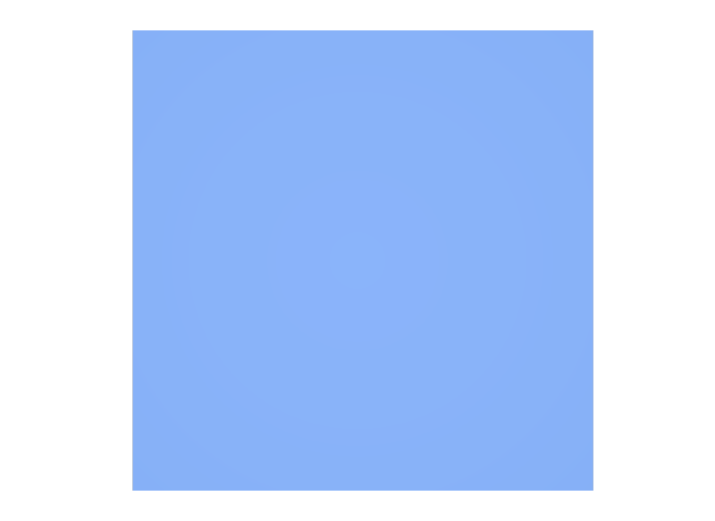
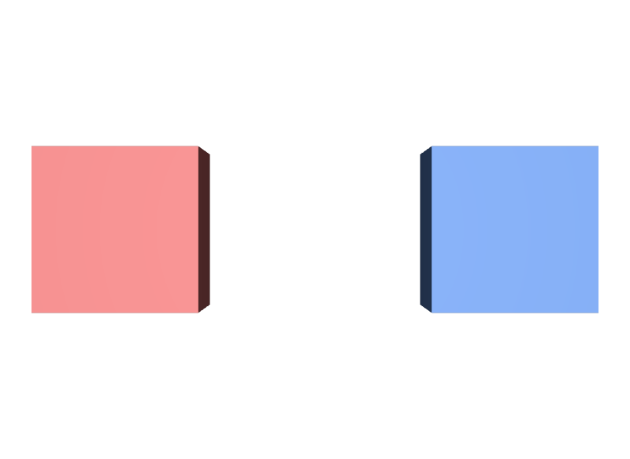

metersPerUnitを書けば揃うと思う
この値は宣言にすぎません。実際に大きさを合わせるには、読み込む側でxformOp:scaleを掛けます。
STEP 50 · STAGE METADATA
「1」が何メートルなのかを、Stageに記録します
今日これだけ
公式情報に基づく説明
metersPerUnitは、Layerの先頭に書くLayer Metadataです。そのLayerの中で使われる長さの「1」が、実世界の何メートルにあたるかを示します。1ならメートル、0.01ならセンチメートル、0.001ならミリメートルです。これは宣言であり、OpenUSDがこの値を見て形を自動で拡大縮小することはありません。
USDA
#usda 1.0
(
defaultPrim = "Crate"
metersPerUnit = 0.01
upAxis = "Y"
)
def Xform "Crate"
{
def Cube "Body"
{
double size = 100
color3f[] primvars:displayColor = [(0.15, 0.35, 0.85)]
}
}metersPerUnit = 0.01なので、この世界の「1」は1センチメートルです。size = 100は100センチメートル、つまり1メートルの箱を意味します。ファイルの先頭にある丸括弧の中がLayer Metadataを書く場所で、Primの外側にあることに注目してください。
USDA
#usda 1.0
(
defaultPrim = "World"
metersPerUnit = 1
upAxis = "Y"
)
def Xform "World"
{
def Cube "LocalCrate"
{
double size = 1
color3f[] primvars:displayColor = [(0.85, 0.2, 0.2)]
double3 xformOp:translate = (-1.2, 0, 0)
uniform token[] xformOpOrder = ["xformOp:translate"]
}
def "ImportedCrate" (
references = @crate-in-centimetres.usda@
)
{
double3 xformOp:translate = (1.2, 0, 0)
uniform token[] xformOpOrder = ["xformOp:translate"]
}
}こちらはmetersPerUnit = 1、つまりメートルの世界です。赤いLocalCrateはsize = 1で1メートル。青いImportedCrateは先ほどのセンチメートルの箱を読み込んでいますが、中身のsize = 100はそのまま100として扱われます。結果として、1メートルの隣に100メートルの箱が置かれます。
結果

examples/lesson-20a/unit-mismatch.usda / Apple USD Tools 0.25.2 のusdrecord（Hydra Storm・Metal）/ macOS 26.5.2・Apple M4直し方
def "ImportedCrate" (
references = @crate-in-centimetres.usda@
)
{
double3 xformOp:translate = (1.2, 0, 0)
double3 xformOp:scale = (0.01, 0.01, 0.01)
uniform token[] xformOpOrder = ["xformOp:translate", "xformOp:scale"]
}読み込む側のmetersPerUnit（1）を、読み込まれる側のmetersPerUnit（0.01）で割ると100になります。その逆数0.01をxformOp:scaleに掛けると、大きさが揃います。xformOpOrderにscaleを追加することを忘れないでください。書いただけでは有効になりません。

examples/lesson-20a/unit-corrected.usda / Apple USD Tools 0.25.2 のusdrecord（Hydra Storm・Metal）/ macOS 26.5.2・Apple M4Diagram
一般には「読み込まれる側の値 ÷ 読み込む側の値」が掛けるべきscaleになります。センチメートルのアセットをメートルのシーンへ入れるなら0.01、逆にメートルのアセットをセンチメートルのシーンへ入れるなら100です。
Python
from pxr import Usd, UsdGeom
stage = Usd.Stage.CreateNew("scene.usda")
UsdGeom.SetStageMetersPerUnit(stage, UsdGeom.LinearUnits.centimeters)
print(UsdGeom.GetStageMetersPerUnit(stage)) # 0.01
UsdGeom.SetStageMetersPerUnit(stage, UsdGeom.LinearUnits.meters)
print(UsdGeom.GetStageMetersPerUnit(stage)) # 1.0
stage.Save()UsdGeom.LinearUnitsにはmillimeters、centimeters、meters、kilometers、inches、feet、yards、milesなどが用意されています。数値を直接書くより、この定数を使うほうが読み違いを防げます。
USDA → Python mapping
USDA
metersPerUnit = 0.01↓Python
UsdGeom.SetStageMetersPerUnit(stage, UsdGeom.LinearUnits.centimeters)USDA
（値の確認）↓Python
UsdGeom.GetStageMetersPerUnit(stage)USDA
double3 xformOp:scale = (0.01, 0.01, 0.01)↓Python
UsdGeom.Xformable(prim).AddScaleOp().Set(Gf.Vec3f(0.01))Beginner notes
よくある間違い
この値は宣言にすぎません。実際に大きさを合わせるには、読み込む側でxformOp:scaleを掛けます。
シーン側のmetersPerUnitを0.01へ変えても、シーン内の他のアセットが全部100倍になるだけで、問題は移動するだけです。
xformOp:scaleを書いても、xformOpOrderに名前が入っていなければ無視されます。
metersPerUnitを省略した場合の既定値は1（メートル）です。センチメートルで作ったのに書き忘れると、受け取った側が必ず誤解します。usdcheckerもこれを検出し、次のように報告します。
Error: (usdGeomValidators:StageMetadataChecker.MissingMetersPerUnitMetadata)
Stage with root layer <scene.usda> does not specify its linear scale in metersPerUnit.同じ検査でupAxisとdefaultPrimの欠落も報告されます。この3つは、書いてあることを前提に扱われる情報だと考えてください。
Glossary
UsdGeom.LinearUnits.centimetersなど。Official references
確認日: